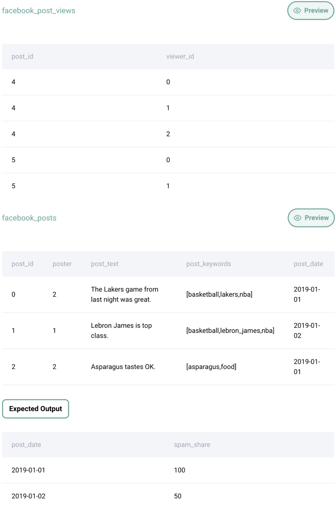

Question sourced from StrataScratch.com.
Database: MySQL
Calculate the percentage of spam posts in all viewed posts by day. A post is considered a spam if a string "spam" is inside keywords of the post. Note that the facebook_posts table stores all posts posted by users. The facebook_post_views table is an action table denoting if a user has viewed a post.

/*
My strategy: To isolate only the posts that are viewed, left join
the facebook_post_views table with the facebook_posts table, then
wrap this result set in a CTE. Using this CTE, get two aggregates:
the total number of posts (i.e. the count of all the rows), and the
total number of spam posts (i.e. the total number of rows within
"spam" included in the post keywords). Derive the percentage of spam
posts from these two aggregates.
*/
WITH viewed_posts AS (
SELECT p.post_date, v.post_id, p.post_keywords
FROM facebook_post_views v
LEFT JOIN facebook_posts p ON v.post_id = p.post_id
)
SELECT
post_date,
100 * (
SUM(IF(post_keywords LIKE '%spam%', 1, 0)) / COUNT(*)
) AS percent_spam_posts
FROM viewed_posts
GROUP BY post_date;